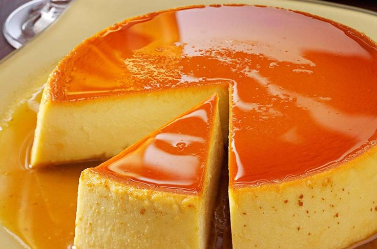

Flan Napolitano
El flan napolitano es un clásico postre mexicano, suave, cremoso y con una irresistible capa de caramelo. Es perfecto para celebraciones o para consentirte con algo dulce y tradicional.
Ingredientes
- 1 lata de leche condensada
- 1 lata de leche evaporada
- 4 huevos
- 1 cucharada de esencia de vainilla
- 1/2 taza de azúcar (para el caramelo)
Preparación
- Derrite el azúcar en un sartén hasta formar un caramelo dorado y viértelo en un molde.
- Licúa la leche condensada, evaporada, huevos y vainilla.
- Vierte la mezcla en el molde sobre el caramelo.
- Hornea a baño maría a 180°C por 1 hora o hasta que al insertar un palillo salga limpio.
- Deja enfriar, refrigera y desmolda.